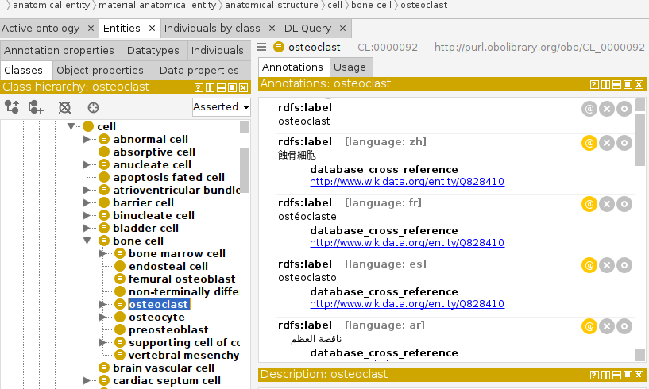

Multilingual Cell Ontology
This project adds multilingual labels to the Cell Ontology using data from Wikidata.
The labels are fetched from Wikidata and incorporated into the Cell Ontology (CL). The updated ontology file can be downloaded below.
Download the Multilingual Cell OntologyProject Details
This project uses SPARQL queries to fetch labels from Wikidata for multiple languages and integrates these labels into the Cell Ontology. The languages included are French, Spanish, German, Portuguese, Italian, Arabic, Greek, Russian, Japanese, and Chinese. Only labels available in the Wikidata platform are retrieved, thus coverage is often incomplete. The project is open-source and the code is available on GitHub. The ontology file was last updated on the 8 of July, 2024.
GitHub Repository Cell Ontology Wikidata